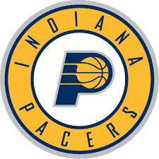

Indiana Pacers es un equipo de baloncesto profesional de la NBA con sede en Indianápolis, Indiana. Forman parte de la División Central de la Conferencia Este de la liga. Los Pacers se establecieron por primera vez en 1967 como miembros de la American Basketball Association (ABA) y se convirtieron en miembros de la NBA en 1976 como resultado de la fusión de ambas ligas. Juegan sus partidos en casa en el Bankers Life Fieldhouse.
En la temporada 2010-11, pese al irregular comienzo con O'Brien, una victoria contra Washington Wizards en abril de 2011 permitió a los Pacers acceder a playoffs después de 5 años de ausencia. En primera ronda se enfrentaron a los Chicago Bulls de Derrick Rose, dando la sorpresa y ganando el primer partido, pero el sueño acabó ahí, perdiendo 1-3 en el cómputo global y siendo apeados. Para la temporada 2011-12 (que incluía lockout), los Pacers se hicieron con Louis Amundson procedente de Golden State Warriors a cambio de Brandon Rush. También se hicieron con los agentes libres Leandro Barbosa y Kyrylo Fesenko. En dicha temporada, los Pacers dieron un salto de calidad respecto a la anterior, liderados por jugadores como Roy Hibbert, Danny Granger y Paul George, finalizando terceros de la Conferencia Este tras Chicago Bulls y Miami Heat y teniendo que enfrentarse a Orlando Magic en playoffs. Tras vencer al conjunto de Florida por 4-1, a punto estuvieron de dar la campanada contra los Miami Heat de los "Beach Boys", pero finalmente fueron apeados por 4-2. Con la temporada 2012-13, los Pacers buscaron mantener el bloque de su exitosa pasada campaña. Darren Collison y Dahntay Jones marcharon a Dallas Mavericks a cambio del pívot Ian Mahinmi. D.J. Augustin y Sam Young llegaron libres procedentes de Charlotte Bobcats y Philadelphia 76ers respectivamente. También arribó libre Gerald Green procedente de Brooklyn Nets. Los Pacers llegaron hasta la final de la Conferencia Este de la NBA sin embargo fueron derrotados nuevamente por el Miami Heat en siete juegos.
Los Pacers han ganado tres campeonatos, todos en la ABA. Fueron campeones de la Conferencia Este de la NBA en 2000, además de lograr nueve títulos de división. Seis jugadores del Salón de la Fama - Reggie Miller, Chris Mullin, Alex English, Mel Daniels, Roger Brown y George McGinnis - jugaron con los Pacers durante varias temporadas.
 Indice
Indice